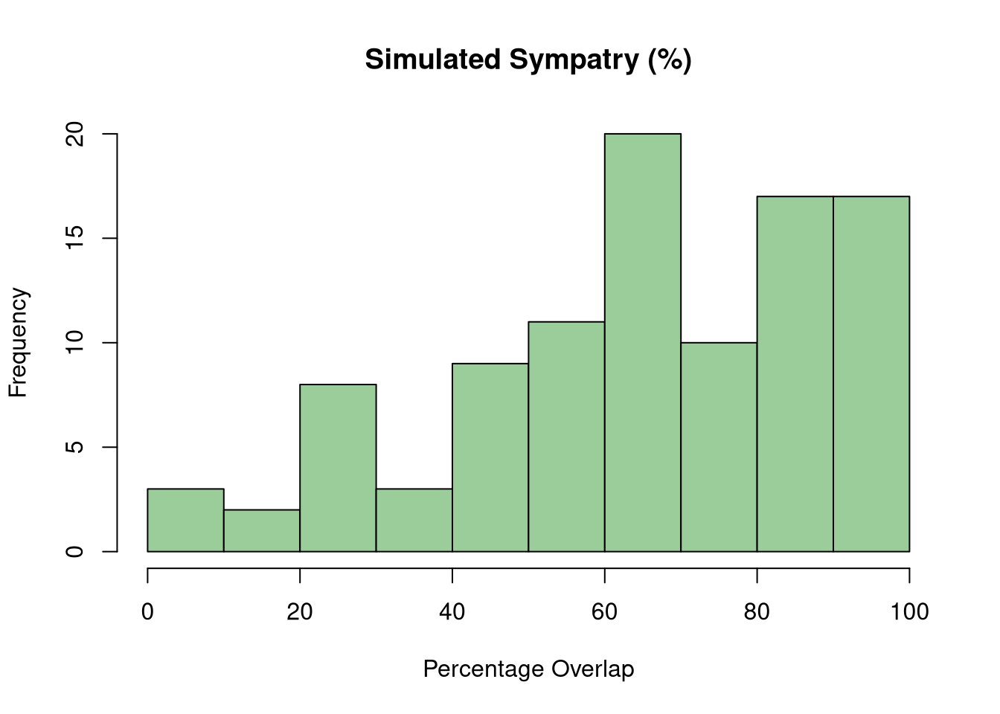
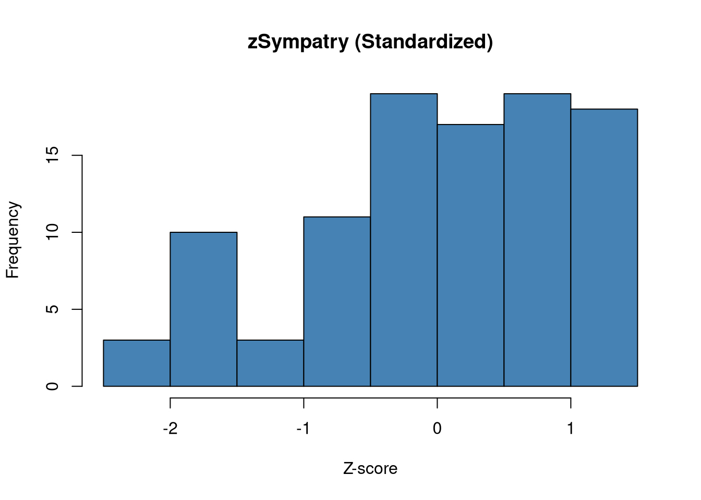

library(BiasedUrn)Bayesian Analysis of Syntopy in Sister Species Pairs
Introduction
Following the framework of Remeš & Harmáčková (2023), this assignment simulates and analyzes local co-occurrence (syntopy) in bird sister species pairs. I model the co-occurrence probability at local sites as a function of ecological and spatial predictors.
We can imagine the range overlap being the jar, from which we randomly draw co-occurence states. There are four possible outcomes of that drowing: 1) both species are present, 2) species A is present, 3) species B is present or 4) both species are missing at the site. To measure the affinity of species co-occurence we use log odds ratio as it makes the odds ratio centered around zero makes the final scale linear.
If we want to model this problem using the Bayesian methods, than the most accurate probability distribution for this process is the Fisher’s non-central hypergeometric distribution, where N stands for the population size (number of sites within the sympatric zone), K is the number of co-occurrence states (K = 4), n is the number of draws and k stands for number of co-occurrences. This distribution is accurate, because the sampling is carried out without replacement which matches the true nature of the problem as we have a limited number of pairs, however I will compare the result with the binomial distribution as well.
NoteSteps
- Generate data for simulation for N=100 and N=500 for both Fisher’s hypergeometric and binomial distribution.
- Model co-occurrence using Fisher’s hypergeometric distribution
- Model co-occurrence using approximation with binomial distribution.
- Compare both models.
Generative Process
To satisfy the assignment’s complexity requirements, I define 5 true parameters that dictate the data-generating process:
\(\beta_{0} = 0.5\) (Baseline log-odds of co-occurrence; slight facilitation)
\(\beta_{res.div} = -0.8\) (Resource use divergence: greater divergence decreases syntopy)
\(\beta_{hab.pref} = 0.5\) (Similar microhabitat and environmental preference increases syntopy)
\(\beta_{sympatry} = 1.2\) (Spatial overlap: regional overlap strongly increases syntopy)
\(\beta_{prod} = 0.3\) (Environmental productivity: richer environments support co-occurrence)
Fishers’ Hypergeometric Distribution
Mathematical Formulation
For each site \(i\) out of \(N = 100\), the co-occurrence affinity (\(α\)) is governed by the logarithmic function:
\[\text{log}(ω_i) = \beta_{0} + \beta_{res.div} \cdot X_{1,i} + \beta_{hab.pref} \cdot X_{2,i} + \beta_{sympatry} \cdot X_{3,i} + \beta_{prod} \cdot X_{4,i}\]
The observed co-occurrence \(k_i\) is modeled with Fisher’s Hypergeometric distribution representing local survey plots within that site:
\[k_i \sim \text{FisherHypergeometric}(m_{1i},m_{2i}, N_i, ω_i)\]
where:
\(k_i\) = number of sites where both species co-occur
\(m_{1i}\) = total number of sites where species A is present for pair \(i\)
\(m_{2i}\) = total number of sites where species B is present for pair \(i\)
\(N_i\) = total number of sites sampled within the sympatric range of pair \(i\)
\(ω_i\) = the conditional co-occurrence odds ratio for pair \(i\)
Data Generation
set.seed(12)
num_pairs <- 100
N <- rpois(num_pairs, lambda = rgamma(n = num_pairs, shape = 5, rate = 1/10)) + 5 # Added +5 to ensure no pairs have 0 or too few total routes
m1 <- rbinom(num_pairs, size = N, prob = 0.5)
m2 <- rbinom(num_pairs, size = N, prob = 0.5)
hist(N)
set.seed(12)
X_res_div <- rnorm(num_pairs, mean = 0, sd = 1) # X1
X_hab_pref <- rnorm(num_pairs, mean = 0, sd = 1) # X2
# Sympatry
raw_beta <- rbeta(num_pairs, shape1 = 2, shape2 = 1)
target_min <- 5
target_max <- 100
sympatry <- target_min + (raw_beta - min(raw_beta)) * (target_max - target_min) / (max(raw_beta) - min(raw_beta))
X_sympatry <- (sympatry - mean(sympatry)) / sd(sympatry) # X3
# Check the distribution structure
hist(sympatry, breaks = 12, main="Simulated Sympatry (%)", xlab="Percentage Overlap", col="darkseagreen3")
hist(X_sympatry, breaks = 12, main="zSympatry (Standardized)", xlab="Z-score", col="steelblue")
summary(sympatry) Min. 1st Qu. Median Mean 3rd Qu. Max.
5.00 50.17 68.22 65.10 85.92 100.00 X_prod <- rnorm(num_pairs, mean = 0, sd = 1) # X4beta_0 <- 0.5
beta_res_div <- -0.8
beta_hab_pref <- 0.5
beta_sympatry <- 1.2
beta_prod <- 0.3log_omega <- beta_0 +
beta_res_div * X_res_div +
beta_hab_pref * X_hab_pref +
beta_sympatry * X_sympatry +
beta_prod * X_prod
omega <- exp(log_omega)# Calculate the linear predictor (alpha) for each pair
k <- integer(num_pairs)
for(i in 1:num_pairs) {
# Simple safety boundary: if a species isn't present at all, co-occurrence is 0
if(m1[i] == 0 || m2[i] == 0) {
k[i] <- 0
} else {
# rFNCHypergeo(n_samples, m1, m2, total_draws, odds)
# Note: BiasedUrn expects: m1 = white balls, m2 = black balls, n = balls drawn
k[i] <- rFNCHypergeo(1, m1[i], N[i] - m1[i], m2[i], omega[i])
}
}sim_data_100 <- data.frame(
N = N, m1 = m1, m2 = m2, k = k,
res_div = X_res_div, hab_pref = X_hab_pref,
sympatry = X_sympatry, prod = X_prod
)
head(sim_data_100) N m1 m2 k res_div hab_pref sympatry prod
1 18 12 6 5 -1.4805676 1.92671883 -0.1302291 -0.7896609
2 39 18 24 11 1.5771695 0.05143036 1.2109266 -2.0028304
3 68 37 30 14 -0.9567445 1.80052376 -2.2998301 0.5922348
4 51 22 25 5 -0.9200052 -0.55145776 -1.7199266 -0.4093031
5 53 27 21 17 -1.9976421 0.10705889 0.3103887 -1.4592661
6 22 12 13 10 -0.2722960 0.78912404 0.9764830 0.1501300Binomial Distribution
Mathematical Formulation
For each site \(i\) out of \(N = 100\), the probability of co-occurrence \(p_i\) is governed by the logit link function:
\[\text{logit}(p_i) = \beta_{0} + \beta_{res.div} \cdot X_{1,i} + \beta_{hab.pref} \cdot X_{2,i} + \beta_{sympatry} \cdot X_{3,i} + \beta_{prod} \cdot X_{4,i}\]
The observed co-occurrence \(Y_i\) is modeled as a Binomial process representing local survey plots within that site:
\[Y_i \sim \text{Binomial}(M_i, p_i)\]
where \(M_i\) is the number of sampling efforts at site \(i\).
Data Generation
Modeling
\[\begin{aligned}
K_{ij} &\sim \text{fnchypg}(\vec{m}_i, N - \vec{m}_i, \vec{m}_j, e^\alpha) \\
\alpha &= \beta_0 + \lambda_i + \lambda_j + \beta X \\
\beta_k &\sim \text{N}(0, 1) \\
\beta_0 &\sim \text{N}(0, 4) \\
\lambda_i &\sim \text{N}(0, 1)
\end{aligned}\]